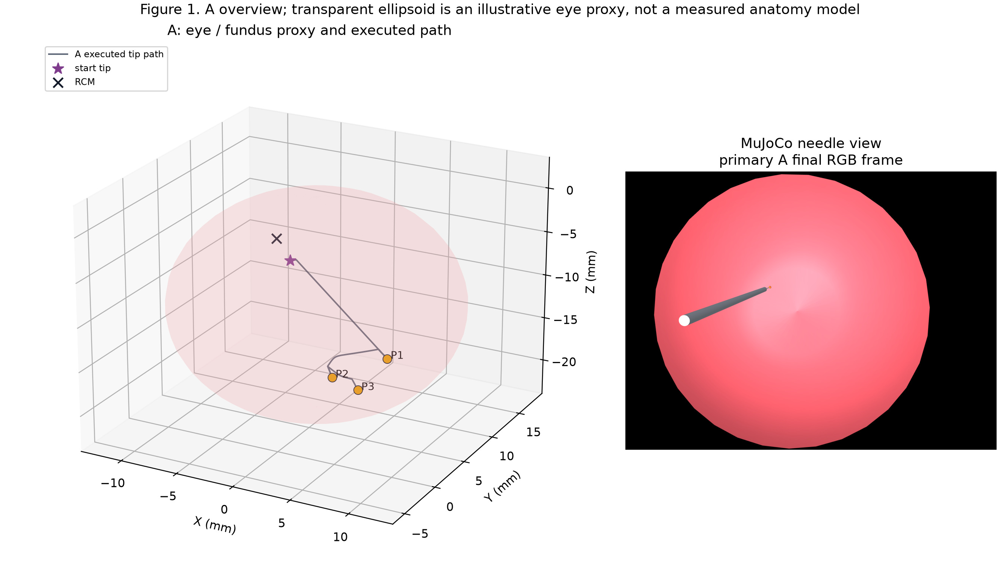
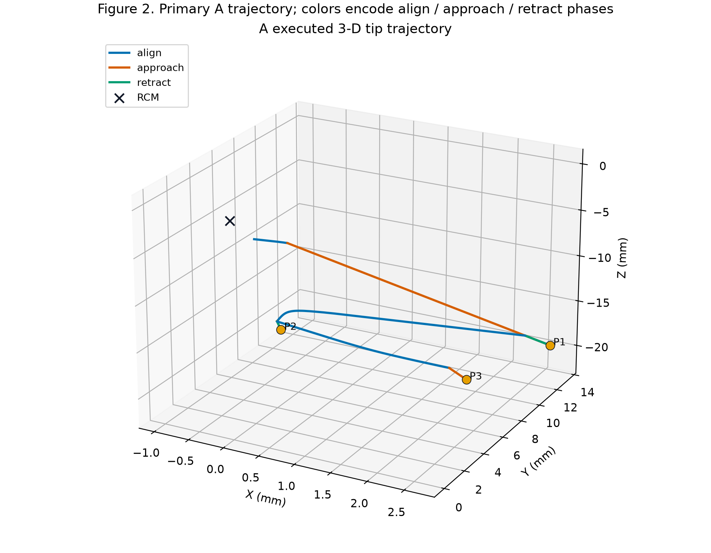
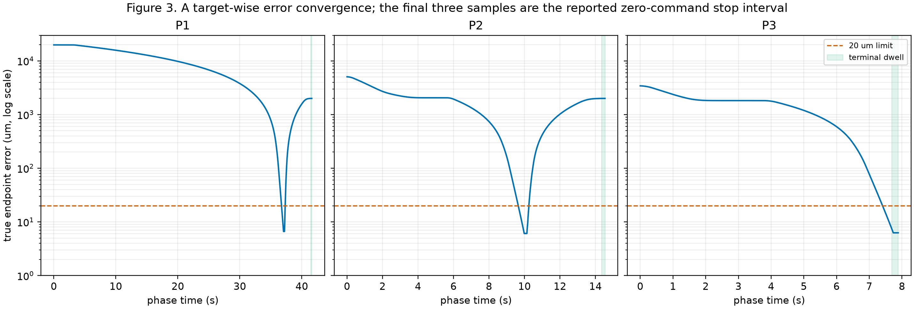
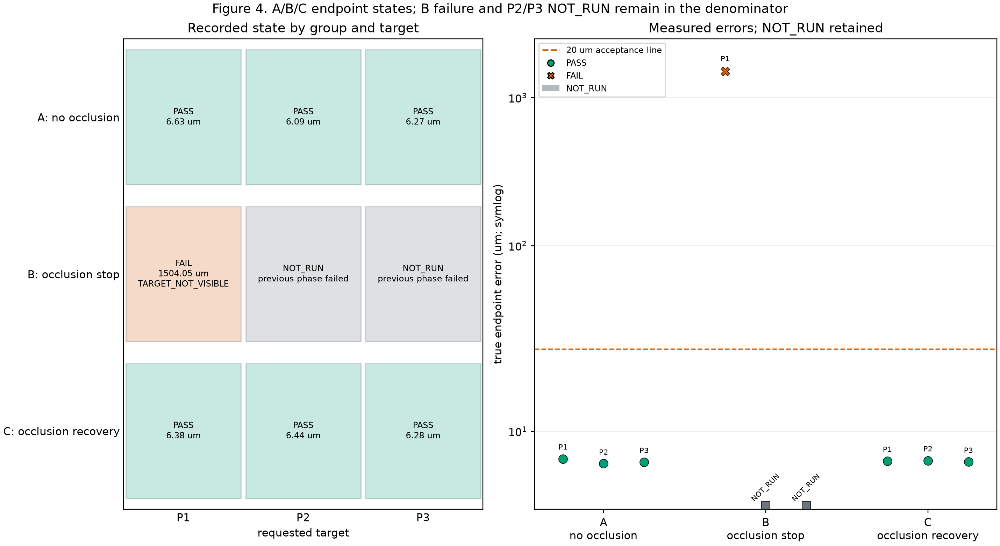
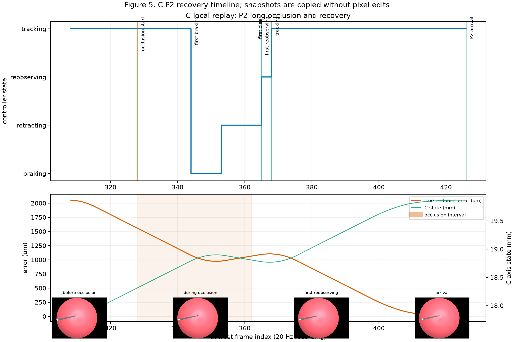
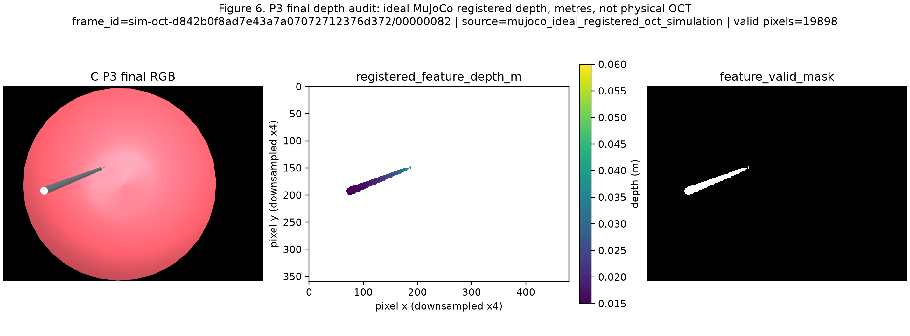
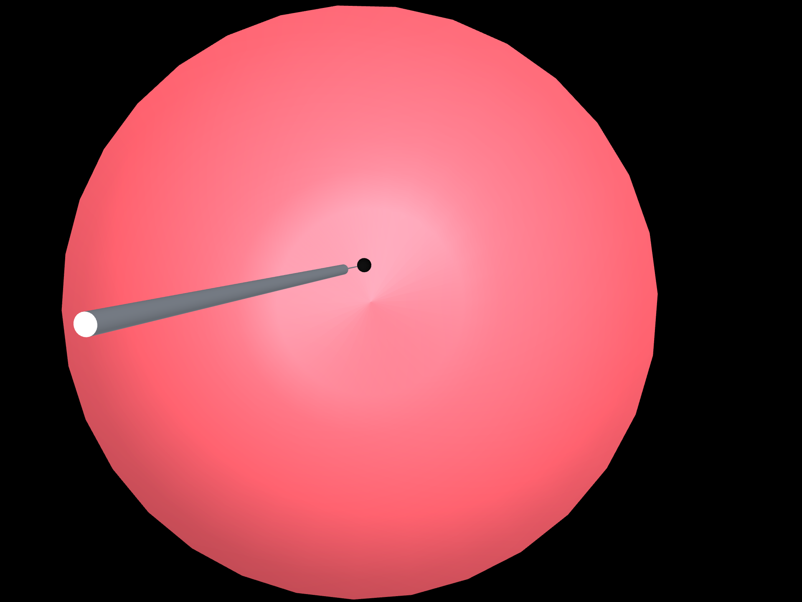
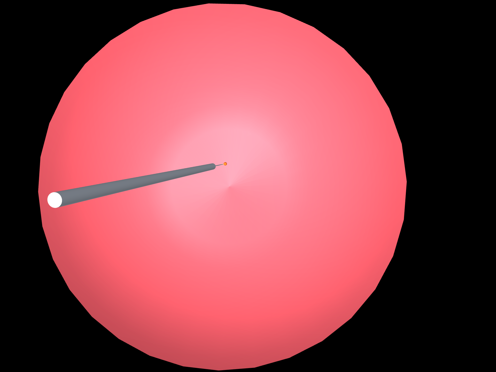
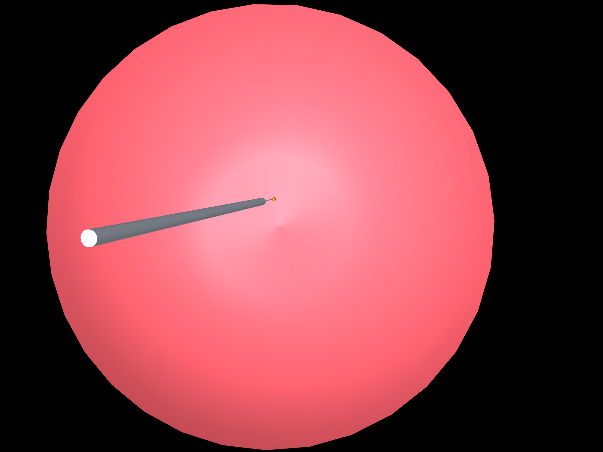
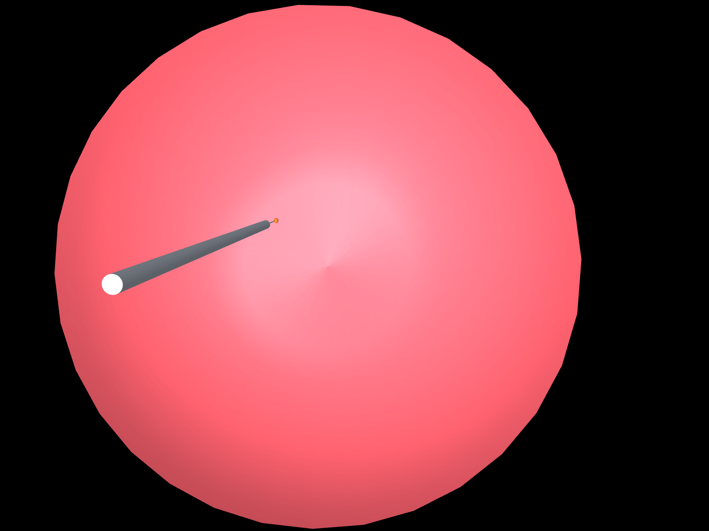

79afacc was not verified because the remote was unavailable and this checkout has no Git metadata. This is a local fallback. Primary episodes predate the OCT wrapper. All OCT-like data shown here are ideal MuJoCo registered depth in metres, not physical OCT; no hardware execution or real-time 20 Hz guarantee is claimed.| Group | Successful targets | Attempted | Successful endpoint errors (um) | Three-point max (um) |
|---|---|---|---|---|
| A: no occlusion | 3/3 | 3/3 | 6.634, 6.085, 6.268 | 6.634482537712616 |
| B: occlusion stop | 0/3 | 1/3 | - | None |
| C: occlusion recovery | 3/3 | 3/3 | 6.382, 6.442, 6.283 | 6.442211732963663 |
B retains its observed FAIL: TARGET_NOT_VISIBLE at P1 and NOT_RUN at P2/P3. Its independent acceleration audit failed, so it is not labelled safe braking. A and C means/maxima are computed only when all three targets succeeded.










This is a descriptive simulation pilot, not evidence of hardware accuracy, tissue contact safety, policy training, generalization, success-rate estimation, or statistical significance. The prior preview video, if used elsewhere, predates OCT interface connection and its 20 fps is playback speed only.
Machine-readable details: provenance, protocol, metrics, OCT audit, SHA256 manifest.